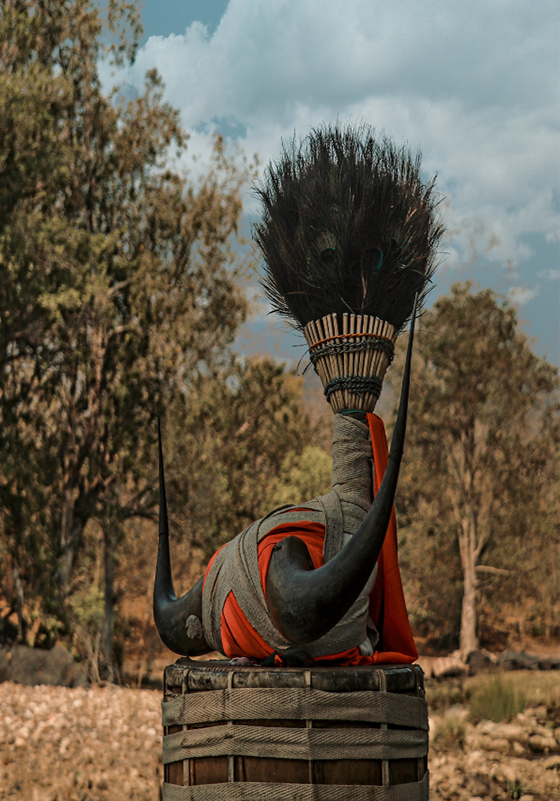
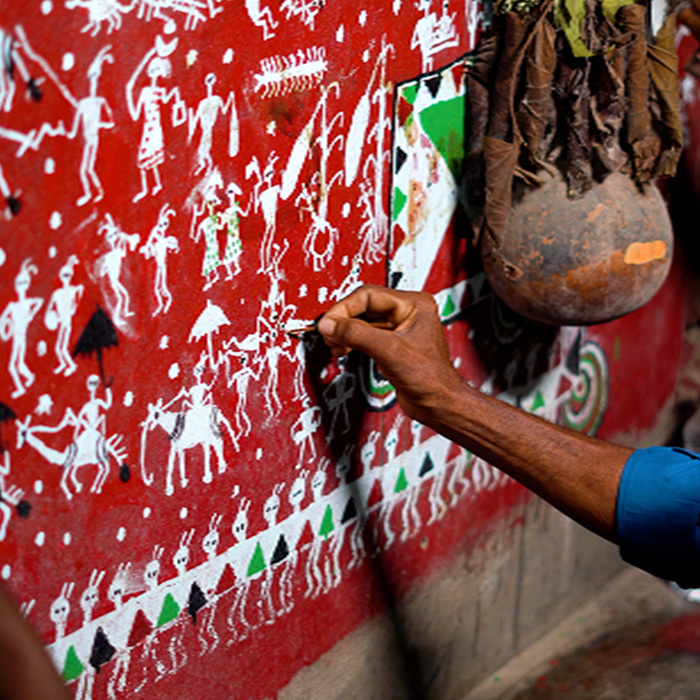
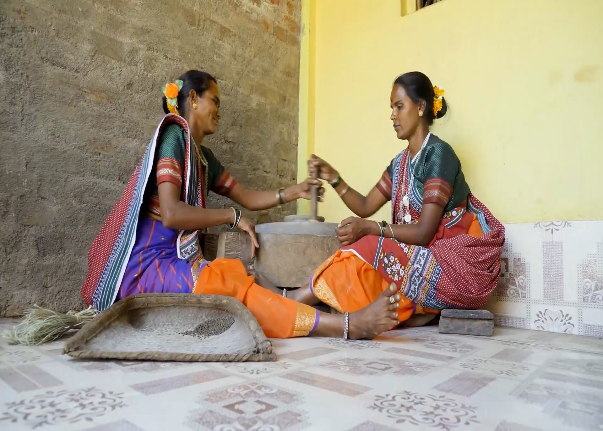

<section>
    <div class="container">
        <div class="top_wrapper">
        <div class="main_wrapper">
                <div id="left">
                
                
                
            </div>
                <div class="right-column">
                    <div id="right-top">
                        
                        
                        
                </div>
                <div id="right-bottom">
                    
                    
                    
                </div>
                </div>
            
        </div>
        <div class="content-section">
            <h2 class="title">AADI SAMPADA</h2>
            <p>This digital repository is a unique one stop destination to explore and celebrate India's vast tribal heritage. The platform presents rich collection of knowledge, resources, and insights about diverse traditions, artistic expressions, and cultural practices of tribal communities across the country.</p>
            <p>From traditional art forms and indigenous crafts to folklore, rituals, and ways of life, Aadi Sampada seeks to preserve and promote all the priceless contributions of the tribal society. It serves as a link between age-old traditions and the current trends so that the wisdom and preciousness the communities had to offer can be accessible for generations to come.</p>
            <p>Immerse yourself in the beauty, resilience, and knowledge of India's tribal cultures with Aadi Sampada - your gateway to the timeless treasures of indigenous traditions.</p>
            <a href="#" class="learn-more">Learn More</a>
        </div>
    </div>
    </div>
</section>